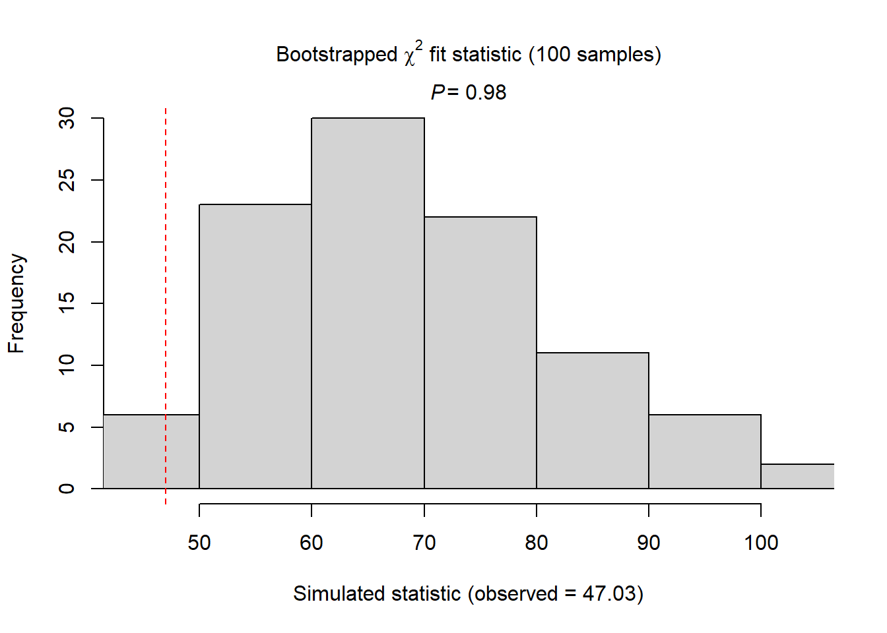
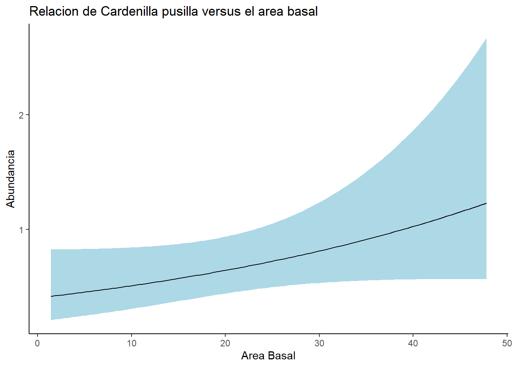

Aves <- read.csv("data/AvesHabitatUm.csv")Clase 5: Uso de Unmarked, Estimación de abundancia por conteo por puntos
Unmarked se destaca como uno de los paquetes más populares para ajustar modelos de abundancia que incorporan variables de detección. A diferencia de Distance, este paquete se caracteriza por su mayor complejidad y una versatilidad notable en la capacidad de ajustar modelos más detallados. Requiere un nivel de conocimiento en R al menos intermedio para aprovechar plenamente su potencial, debido a su complejidad y las múltiples opciones de modelado que ofrece.
En esta clase se obordara como utilizar Unmarked para modelar abundancia de especies para lo cuales se tomaran datos por medio de conteo por puntos. En la clase se explicara desde cero el uso de este paquete y paso a paso como ajustar, seleccionar, validar, interpretar y graficar el modelo, incluso la presancion de los datos para publicaciones cientificas.
En esta clase, exploraremos el uso de Unmarked para modelar la abundancia de especies a partir de datos recopilados mediante conteo por puntos. Desde los fundamentos, explicaremos paso a paso cómo utilizar este paquete, cubriendo el proceso completo: desde el ajuste inicial del modelo hasta la selección, validación e interpretación de los resultados. También abordaremos la presentación de los datos para su inclusión en publicaciones científicas, asegurando un entendimiento completo y la capacidad de aplicar estos modelos de manera efectiva en contextos de investigación y divulgación científica.
Seleccionar variables necesarias
library(tidyverse)Warning: package 'lubridate' was built under R version 4.3.2── Attaching core tidyverse packages ──────────────────────── tidyverse 2.0.0 ──
✔ dplyr 1.1.3 ✔ readr 2.1.4
✔ forcats 1.0.0 ✔ stringr 1.5.0
✔ ggplot2 3.4.3 ✔ tibble 3.2.1
✔ lubridate 1.9.3 ✔ tidyr 1.3.0
✔ purrr 1.0.2
── Conflicts ────────────────────────────────────────── tidyverse_conflicts() ──
✖ dplyr::filter() masks stats::filter()
✖ dplyr::lag() masks stats::lag()
ℹ Use the conflicted package (<http://conflicted.r-lib.org/>) to force all conflicts to become errorsAvesLimpia <- Aves %>%
select(Site, VEGID, Type, ALTITUDE, Area_Basal, Hora, Fecha, Cielo, Viento, Especies, Abundancia) %>%
mutate(Fecha = as.Date(Fecha, format = "%m/%d/%Y")) %>%
mutate(Hora = as.integer(str_replace(Hora, ":", "")))
AvesOrdenadas <- AvesLimpia %>%
arrange(Site, Especies, Fecha, Hora, VEGID, Type, ALTITUDE, Area_Basal) %>%
group_by(Site, Especies, Fecha, Hora, VEGID, Type, ALTITUDE, Area_Basal) %>%
summarise(Abundancia = max(Abundancia)) %>%
group_by(Site, Fecha, Hora, Especies, VEGID, Type, ALTITUDE, Area_Basal) %>%
mutate(Orden = factor(row_number())) %>%
filter(Orden %in% c(1, 2, 3))`summarise()` has grouped output by 'Site', 'Especies', 'Fecha', 'Hora',
'VEGID', 'Type', 'ALTITUDE'. You can override using the `.groups` argument.CarpusPivot <- AvesOrdenadas %>%
pivot_wider(names_from = Especies, values_from = Abundancia, values_fill = 0) %>%
select(Site, VEGID, Type, ALTITUDE, Area_Basal, Fecha, Hora, Orden, CARPUS)
CarpusPivotOrden <- CarpusPivot %>%
arrange(Site, VEGID, Type, ALTITUDE, Area_Basal, CARPUS, Fecha, Hora) %>%
group_by(Site,VEGID, Type, ALTITUDE, Area_Basal, CARPUS) %>%
mutate(Orden = factor(row_number())) %>%
filter(!is.na(Site))
head(CarpusPivotOrden)# A tibble: 6 × 9
# Groups: Site, VEGID, Type, ALTITUDE, Area_Basal, CARPUS [3]
Site VEGID Type ALTITUDE Area_Basal Fecha Hora Orden CARPUS
<int> <chr> <chr> <dbl> <dbl> <date> <int> <fct> <int>
1 1 1 F 879 10 2016-02-10 802 1 0
2 1 1 F 879 10 2016-03-19 815 2 0
3 1 1 F 879 10 2016-03-31 725 3 0
4 3 3P C 825 7.8 2016-03-17 1125 1 0
5 3 3P C 825 7.8 2016-03-31 1200 2 0
6 4 4P F 868 NA 2016-03-17 1418 1 0Pasar cada replica en columnas diferentes de acuerdo a la especie de ave
# Crear un conjunto de datos con todos los niveles de Orden por Site
CARPUSunmarked <- CarpusPivotOrden %>%
filter(!is.na(Fecha)) %>%
mutate(Orden = as.numeric(Orden)) %>%
complete(Orden = 1:3) %>%
mutate(CARPUS = ifelse(is.na(Fecha), NA, CARPUS),
CARPUS = replace_na(CARPUS, 50))
# Pivot_wider
CARPUSunmarkedReady <- CARPUSunmarked %>%
mutate(Fechaord = yday(Fecha)) %>%
group_by(Site, Orden, VEGID, Type, ALTITUDE, Area_Basal) %>%
summarise(CARPUS = max(CARPUS),
Fechaord = max(Fechaord),
Hora = max(Hora)) %>%
ungroup() %>%
group_by(Site, VEGID, Type, ALTITUDE, Area_Basal) %>%
pivot_wider(names_from = Orden,
values_from = c(Fechaord, Hora, CARPUS),
values_fill = 0) %>%
mutate(CARPUS_1 = replace(CARPUS_1, CARPUS_1 == 50, NA)) %>%
mutate(CARPUS_2 = replace(CARPUS_2, CARPUS_2 == 50, NA)) %>%
mutate(CARPUS_3 = replace(CARPUS_3, CARPUS_3 == 50, NA)) `summarise()` has grouped output by 'Site', 'Orden', 'VEGID', 'Type',
'ALTITUDE'. You can override using the `.groups` argument.## Definir ocasiones de deteccion
CARPUS_y <- CARPUSunmarkedReady[,12:14]
# y[y > 1] <- 1
## Definir los variables asociados a la deteccion:
Fecha_CARPUS= list(Fecha=CARPUSunmarkedReady[,6:8])
# Y quien realizo la observacion
Hora_CARPUS= list(Hora=CARPUSunmarkedReady[,9:11]) ## Definir los variables de covarianza
CARPUS_siteCovs <- CARPUSunmarkedReady[,c("Type", "ALTITUDE", "Area_Basal")]library(unmarked)
## CREAR DATA FRAME
CARPUSunmarked_df <- unmarkedFramePCount(y = CARPUS_y, siteCovs = CARPUS_siteCovs,
obsCovs=c(Fecha_CARPUS, Hora_CARPUS))Warning: siteCovs contains characters. Converting them to factors.summary(CARPUSunmarked_df)unmarkedFrame Object
44 sites
Maximum number of observations per site: 3
Mean number of observations per site: 1.68
Sites with at least one detection: 22
Tabulation of y observations:
0 1 2 3 <NA>
44 25 4 1 58
Site-level covariates:
Type ALTITUDE Area_Basal
C:20 Min. : 812 Min. : 1.40
F:24 1st Qu.: 952 1st Qu.:10.20
Median :1148 Median :13.40
Mean :1138 Mean :18.70
3rd Qu.:1276 3rd Qu.:22.35
Max. :1622 Max. :47.80
NA's :1
Observation-level covariates:
Fecha Hora
Min. :25.00 Min. : 247.0
1st Qu.:62.25 1st Qu.: 826.0
Median :77.00 Median : 947.5
Mean :71.91 Mean : 969.2
3rd Qu.:85.00 3rd Qu.:1097.5
Max. :92.00 Max. :1426.0
NA's :58 NA's :58 #### MODELAR DETECCION PRIMERO
ModelDet0 <- pcount(~1 ~1, CARPUSunmarked_df) ##Null modelWarning in pcount(~1 ~ 1, CARPUSunmarked_df): K was not specified and was set
to 103.ModelDet1 <- pcount(~Fecha ~1, CARPUSunmarked_df)Warning in pcount(~Fecha ~ 1, CARPUSunmarked_df): K was not specified and was
set to 103.Warning: Hessian is singular. Try providing starting values or using fewer
covariates.ModelDet2 <- pcount(~Hora ~1, CARPUSunmarked_df)Warning in pcount(~Hora ~ 1, CARPUSunmarked_df): K was not specified and was
set to 103.
Warning in pcount(~Hora ~ 1, CARPUSunmarked_df): Hessian is singular. Try
providing starting values or using fewer covariates.ModelDet3 <- pcount(~Fecha + Hora ~1, CARPUSunmarked_df)Warning in pcount(~Fecha + Hora ~ 1, CARPUSunmarked_df): K was not specified
and was set to 103.
Warning in pcount(~Fecha + Hora ~ 1, CARPUSunmarked_df): Hessian is singular.
Try providing starting values or using fewer covariates.library(AICcmodavg)
DetModels <- list(ModelDet0, ModelDet1, ModelDet2, ModelDet3)
DetNames <- c("Nulo", "Fecha", "Hora", "Fecha + Hora")
aictab(DetModels, DetNames, sort = TRUE)
Model selection based on AICc:
K AICc Delta_AICc AICcWt Cum.Wt LL
Nulo 2 94.73 0.00 0.58 0.58 -45.22
Fecha 3 97.04 2.31 0.18 0.76 -45.22
Hora 3 97.04 2.31 0.18 0.95 -45.22
Fecha + Hora 4 99.47 4.73 0.05 1.00 -45.22#### MODELAR DETECCION PRIMERO
ModelAbun0 <- pcount(~1 ~ 1, CARPUSunmarked_df) ##Null modelWarning in pcount(~1 ~ 1, CARPUSunmarked_df): K was not specified and was set
to 103.ModelAbun1 <- pcount(~1 ~ Type, CARPUSunmarked_df)Warning in pcount(~1 ~ Type, CARPUSunmarked_df): K was not specified and was
set to 103.ModelAbun2 <- pcount(~1 ~ ALTITUDE, CARPUSunmarked_df)Warning in pcount(~1 ~ ALTITUDE, CARPUSunmarked_df): K was not specified and
was set to 103.ModelAbun3 <- pcount(~1 ~ Area_Basal, CARPUSunmarked_df)Warning: Some observations have been discarded because corresponding covariates
were missing.Warning: 1 sites have been discarded because of missing data.Warning in pcount(~1 ~ Area_Basal, CARPUSunmarked_df): K was not specified and
was set to 103.library(AICcmodavg)
AbunModels <- list(ModelAbun0, ModelAbun1, ModelAbun2, ModelAbun3)
AbunNames <- c("Nulo", "Type", "ALTITUDE", "Area_Basal")
aictab(AbunModels, AbunNames, sort = TRUE)
Model selection based on AICc:
K AICc Delta_AICc AICcWt Cum.Wt LL
Area_Basal 3 93.08 0.00 0.58 0.58 -43.24
Nulo 2 94.73 1.66 0.25 0.83 -45.22
Type 3 95.51 2.43 0.17 1.00 -44.45
ALTITUDE 3 119.80 26.72 0.00 1.00 -56.60summary(ModelAbun3)
Call:
pcount(formula = ~1 ~ Area_Basal, data = CARPUSunmarked_df)
Abundance (log-scale):
Estimate SE z P(>|z|)
(Intercept) -0.9104 0.3655 -2.49 0.0128
Area_Basal 0.0234 0.0138 1.69 0.0907
Detection (logit-scale):
Estimate SE z P(>|z|)
11.1 53.3 0.208 0.835
AIC: 92.47558
Number of sites: 43
ID of sites removed due to NA: 3
optim convergence code: 0
optim iterations: 62
Bootstrap iterations: 0 confint(ModelAbun3, type = "state", level = 0.9) 0.05 0.95
lam(Int) -1.5116026850 -0.30915757
lam(Area_Basal) 0.0006449957 0.04610495fitstats <- function(Mod_global2) {
observed <- getY(Mod_global2@data)
expected <- fitted(Mod_global2)
resids <- residuals(Mod_global2)
sse <- sum(resids^2,na.rm=TRUE)
chisq <- sum((observed - expected)^2 / expected,na.rm=TRUE)
freeTuke <- sum((sqrt(observed) - sqrt(expected))^2,na.rm=TRUE)
out <- c(SSE=sse, Chisq=chisq, freemanTukey=freeTuke)
return(out)
}
(pb <- parboot(ModelAbun3, fitstats, nsim=100, report=1))
Call:
parboot(object = ModelAbun3, statistic = fitstats, nsim = 100, report = 1)
Parametric Bootstrap Statistics:
t0 mean(t0 - t_B) StdDev(t0 - t_B) Pr(t_B > t0)
SSE 30.5 -14.887 13.88 0.842
Chisq 47.0 -23.834 20.17 0.891
freemanTukey 28.2 -0.293 3.78 0.554
t_B quantiles:
0% 2.5% 25% 50% 75% 97.5% 100%
SSE 20 24 35 45 52 78 90
Chisq 32 43 58 70 80 119 161
freemanTukey 20 21 26 29 31 35 37
t0 = Original statistic computed from data
t_B = Vector of bootstrap samplescHat_pb <- pb@t0[2] / mean(pb@t.star[,2])
MigGOF <- Nmix.gof.test(ModelAbun3, nsim = 100, report = 3)
CARPUS_arear_basal <- data.frame(Area_Basal = seq(min(CARPUSunmarkedReady$Area_Basal, na.rm = TRUE), max(CARPUSunmarkedReady$Area_Basal, na.rm = TRUE), length.out = 100))
Carpus_pre_area_basal <- predict(ModelAbun3, newdata = CARPUS_arear_basal, type = "state")
Carpus_pre_area_basal$Area_Basal <- CARPUS_arear_basal$Area_Basal ggplot(data= Carpus_pre_area_basal, aes(x= Area_Basal, y= Predicted))+
geom_ribbon(aes(ymin= lower,
ymax= upper), fill = "lightblue") +
geom_line(color= "black") +
labs(x = "Area Basal",
y = "Abundancia")+
ggtitle("Relacion de Cardenilla pusilla versus el area basal") +
theme_classic()
library(unmarked)
data(mallard)
mallardUMF <- unmarkedFramePCount(mallard.y, siteCovs = mallard.site,
obsCovs = mallard.obs)
(fm.mallard <- pcount(~ ivel+ date + I(date^2) ~ length + elev + forest, mallardUMF, K=30))Warning: 4 sites have been discarded because of missing data.
Call:
pcount(formula = ~ivel + date + I(date^2) ~ length + elev + forest,
data = mallardUMF, K = 30)
Abundance:
Estimate SE z P(>|z|)
(Intercept) -1.989 0.245 -8.14 4.10e-16
length -0.413 0.134 -3.07 2.14e-03
elev -1.507 0.247 -6.11 1.01e-09
forest -0.707 0.162 -4.37 1.22e-05
Detection:
Estimate SE z P(>|z|)
(Intercept) 0.25516 0.2240 1.139 0.2546
ivel 0.29778 0.1773 1.680 0.0930
date -0.36894 0.1521 -2.425 0.0153
I(date^2) 0.00908 0.0886 0.103 0.9183
AIC: 511.2066 (fm.mallard.nb <- pcount(~ date + I(date^2) ~ length + elev, mixture = "NB", mallardUMF, K=30))Warning: 4 sites have been discarded because of missing data.
Call:
pcount(formula = ~date + I(date^2) ~ length + elev, data = mallardUMF,
K = 30, mixture = "NB")
Abundance:
Estimate SE z P(>|z|)
(Intercept) -1.760 0.304 -5.78 7.31e-09
length -0.383 0.208 -1.84 6.59e-02
elev -1.637 0.322 -5.08 3.72e-07
Detection:
Estimate SE z P(>|z|)
(Intercept) -0.09070 0.2879 -0.3150 0.7528
date -0.29341 0.1413 -2.0770 0.0378
I(date^2) -0.00561 0.0756 -0.0742 0.9408
Dispersion:
Estimate SE z P(>|z|)
-0.983 0.328 -2.99 0.00277
AIC: 484.6365 summary(fm.mallard)
Call:
pcount(formula = ~ivel + date + I(date^2) ~ length + elev + forest,
data = mallardUMF, K = 30)
Abundance (log-scale):
Estimate SE z P(>|z|)
(Intercept) -1.989 0.245 -8.14 4.10e-16
length -0.413 0.134 -3.07 2.14e-03
elev -1.507 0.247 -6.11 1.01e-09
forest -0.707 0.162 -4.37 1.22e-05
Detection (logit-scale):
Estimate SE z P(>|z|)
(Intercept) 0.25516 0.2240 1.139 0.2546
ivel 0.29778 0.1773 1.680 0.0930
date -0.36894 0.1521 -2.425 0.0153
I(date^2) 0.00908 0.0886 0.103 0.9183
AIC: 511.2066
Number of sites: 235
ID of sites removed due to NA: 12 69 118 146
optim convergence code: 0
optim iterations: 44
Bootstrap iterations: 0